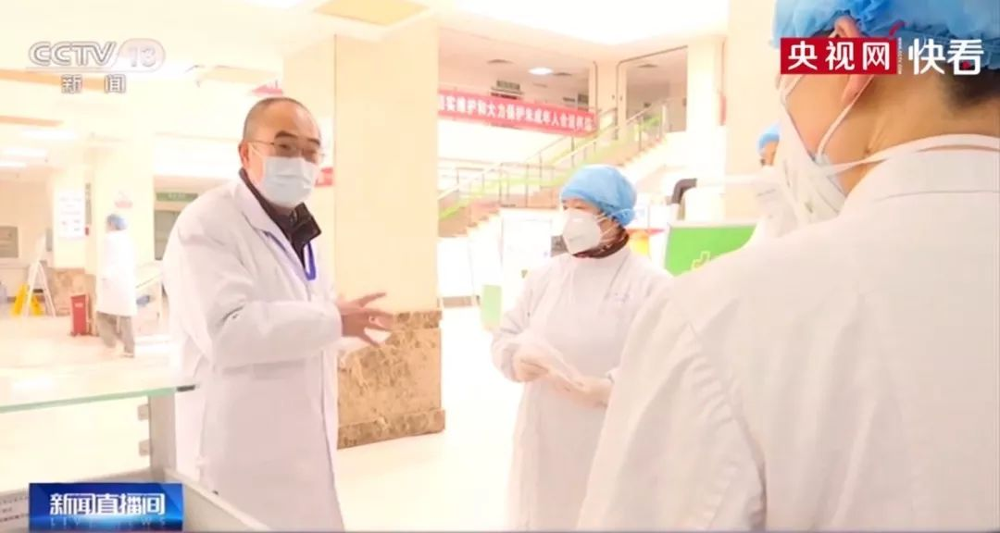

独家 | 第二批上海援鄂医疗队在重症病房的第一天：科学有序准备好持久战
原文链接 备份链接 “一百多人来自上海不同的医院，大家首先要内部磨合，我们的医护人员还要与武汉当地医护人员磨合。我们计划用3-5天来完成磨合，然后科学分配，提高工作效率。” 文 | 黄 祺 今日全国新冠肺炎确诊人数过万，武汉的重症患者还在 …

张定宇常说，自己“太急了”。他的急迫感，来自于自己逐渐萎缩的运动神经元细胞，也来自于肆虐武汉城的新型冠状病毒，他想从死神手中抢夺回更多的生命。
张定宇很急。国家电视台拍摄他那天，他从门诊大厅、病房、值班室、会议厅、CT室疾速走过，脚步有些踉跄。与医生护士们交谈时，语速极快。一名护士采痰的操作有误，可能会影响样本的病毒检测结果，他当众发了火。
近一两年来，金银潭医院的医生护士们都知道，院长的脾气越来越急躁，腿脚也变得不太利索。感染科主任文丹宁回忆，张定宇走路时脚步高低不平，上下楼梯总是抓紧扶手，行动困难。她问过许多次，他只说“膝关节动过手术”。
等到这次疫情，张定宇不得已才坦白了病情，他患上了“渐冻症”，腿部肌肉正在逐渐萎缩、坏死。

图 | 源自央视网

新冠肺炎到来，急性子院长就更急了。“全院都知道，我性子急，嗓门大。”从医34年，张定宇已经是武汉传染病界的权威。
2019年12月29日，金银潭医院收治了首批7位不明原因肺炎患者。医护人员为病人做咽拭子检测，发现检测结果是阴性，肺部CT却显示异常，肺部斑点加大，病人病情持续加重。他们怀疑病毒通过下呼吸道进入肺泡，咽喉检查根本不起作用。
第二天一早，张定宇紧急决策：加强消毒防护，腾退隔离病房，转移其他病人，调配院内医疗资源。同时带领医护人员采集7位病人的支气管肺泡灌洗液，送往中科院武汉病毒所进行检测。
4天后，金银潭医院开辟了针对不明肺炎病例的隔离病区。
张定宇的雷厉风行一度给同事们带来不少压力。他们回忆：张定宇常常比换班的同事来得更早，追问当天收治病人的细节：当天收治的病人数、转走的病人数。一位医生给院长打电话反映新开的病区缺少人手，张定宇即刻带着护理部、后勤科室来现场协调。南三病区主任张丽总结说，“（这次）任务布置急、要求高，事无巨细，骂起人来都不留情面。”

图 | 源自央视网
现在回想，她说，“幸亏靠了他的暴脾气和果断。”
1月7日，中国疾控中心科研团队分离了张定宇和同事们收集的样本。1月8日，国家卫建委公布，初步确认“新型冠状病毒”为此次疫情的病原。
接着，疫情在武汉爆发。
金银潭医院作为传染病专科医疗机构，也是武汉首批开放的定点医院，收治的都是确诊的重症、危重症患者。春节期间，从其他医院转诊而来的病患数量急剧增加，ICU14张床位根本就是杯水车薪。张定宇把工作重心放在了开辟新的ICU病房、尽力收治更多病患上。
硬扛了20多天后，1月24日，除夕夜，晚上8点，张定宇接到武汉市卫健委电话，得知：来自上海的316名医护人员将于凌晨2点乘专机抵达武汉，入驻金银潭医院。
第二天，陆军军医大学医疗队接管金银潭2个病区，负责20名确诊患者的治疗。上海医疗队正式接手金银潭医院老病房，共2个病区、80张床位。截至当日，金银潭医院累计收治患者657人。
上海瑞金医院重症医学专家陈德昌教授，在所属病区首次开展在患者清醒状态下的ECMO体外膜肺氧合的治疗，取得了良好的效果。上海市第一人民医院副院长郑军华对医护人员进行高效调配，带领医疗队在陌生环境中迅速开展工作。来自上海专家的倾囊相助，张定宇稍微安下心来，感激又钦佩。
这些来自上海、北京的医学专家团队中，不乏令他敬仰已久的业界前辈。张定宇行走不便，常常无法亲自接待，心有愧疚。不久后，他决定向大家坦白病情，自己确诊患上运动精神元病，也就是人们常说的“渐冻症”。这是一种罕见的绝症，目前为止，没有任何方法可以治愈。患者会慢慢发展为全身肌肉萎缩和吞咽困难，直至产生呼吸衰竭而亡。

“性子急，是因为生命留给我的时间不多了。”早在2018年10月，张定宇久确诊了“渐冻症”。作为医生，他很清楚自己接下来要遭遇什么，疾病提前宣告了他人生的终点。
他知道，随着全身肌细胞的逐渐萎缩，自己高大的身材会萎缩成小小的一团，先被困在轮椅上，然后被困在床上，凭眨眼和他人交流，会用上呼吸机，在胃里做造管，最后呼吸衰竭，迎来死亡。每一位“渐冻症”病人，都是这样眼睁睁看着自己慢慢消逝的。
剩下的时间越来越少，张定宇决定做点什么。他选择不对同事们公开生病的消息，不知情的同事们只觉得，在时间流逝过程中，院长的性子越来越急了，对待工作愈发容不得马虎。
2007年和2011年，张定宇曾随中国医疗队出征，先后赴往阿尔及利亚，巴基斯坦开展国际医疗援助。2008年5月14日，四川汶川地震发生后的第三天，张定宇作为湖北省第三医疗队的负责人出现在重灾区什邡市，全力救治伤员。
这次新型冠状病毒的侵袭，是张定宇从业以来面临的最大挑战。长期超负荷工作，他的身体也已不堪重负。一次采访中，他透露，最近2、3个月，他感觉到自己的臀大肌正在萎缩。晚上睡觉时，他可以明显摸到自己关节囊和关节之间的间隙。肌细胞比自己预料中萎缩得还要快。
在接受《面对面》节目的采访时，这位“渐冻症院长”表现出出人意料的乐观和坦荡，他预料自己以后会被固定在轮椅上，现在多做一点，以后或许能少留一些遗憾。
他说：“所有人的终点都是死亡，而我只是知道了自己的终点可能不会离得太远，所以我想把这段时间用足、用好，不是一样可以再做一些事情吗？”

图 | 张定宇在CCTV-13《面对面》

1月14日，张定宇在武汉第四医院工作的妻子被确诊为新型冠状病毒感染。一向镇定的张定宇，突然慌了神。晚上，在开车去探望妻子的路上，张定宇哭了。
相伴28年，那是最令张定宇感到害怕的一个晚上。坐在隔离病房里，张定宇陪妻子聊了会天。看着她呼吸窘迫，虚弱不堪的样子，张定宇十分痛苦。
之后的3、4天，金银潭医院接诊的病人越来越多，张定宇分身乏术，实在顾不上再去探望妻子，他非常内疚，在后来的采访中说：“我也许是个好医生，但不是个好丈夫。”
不久后，好消息传来，妻子在使用抗病毒药物后，病情有所好转。1月29日，她正式痊愈出院，回家休养。
2月3日，武汉市人力资源和社会保障局发布通告，为表彰张定宇同志的先进事迹，决定给予张定宇同志记功奖励。
2月6日，湖北省人民政府决定给予张定宇记大功奖励。
2月9日，农历十五。在中央电视台的元宵特别节目上，主持人水均益连线了正在前线的张定宇医生。在白大褂的左胸上，张定宇别了一枚党徽。他说，感谢全国人民的驰援，我之前每天睡3小时，现在我可以睡6个小时了，“非常感谢大家，我的睡眠是全国人民给的。”
截至10日晚，在武汉市金银潭医院以及驰援武汉的各地医护人员的努力下，医院累计收治病人1500余人，部分病患已顺利出院。金银潭医院共有9名医护人员院内感染，一些已出院，没有重症案例。这同张定宇早期的敏锐、雷厉风行的举措不无关系。
2月4日凌晨1点，张定宇到武汉客厅方舱医院，查看这里的筹备状况。在网友上传的视频中，他一路蹒跚跛行，留给人们一个急匆匆的背影。
参考资料：
武汉金银潭医院院长：身患绝症，妻子被感染，抗击疫情最前线奋战30余天——湖北日报
记疫情“风暴眼”中武汉金银潭医院院长张定宇——新华社
武汉市金银潭医院院长张定宇：用渐冻的生命 托起信心与希望——湖北日报
走近张定宇尘封10年的国际救援往事：枪林弹雨中，一个中国医生的无疆大爱——湖北日报
张定宇 向极限挑战——CCTV3
- END -
撰文 | 姚远
编辑 | 崔玉敏

原文链接 备份链接 “一百多人来自上海不同的医院，大家首先要内部磨合，我们的医护人员还要与武汉当地医护人员磨合。我们计划用3-5天来完成磨合，然后科学分配，提高工作效率。” 文 | 黄 祺 今日全国新冠肺炎确诊人数过万，武汉的重症患者还在 …
原文链接 备份链接 支援武汉的医护人员已上千，地方900多人，军队450人，随后将再派1600多人。 武汉医护人员身心俱疲，难以应对不断增长的病例和民众的恐慌。 外援的到来，缓解了他们的负担。不少援汉医护人员感到，仅从肺炎诊治难度而 …
原文链接 备份链接 同力协契 共克时艰 武汉“封城”已三周，新冠肺炎全国感染人数还在持续上涨。 所有人都在期待拐点的到来，无数白衣天使依旧坚守在抗击疫情第一线，一刻不敢松懈。社会各界也在通过各种方式参与到这场没有硝烟的抗疫保卫战里。 这 …
原文链接 备份链接 对病毒的未知、医疗物资缺乏，又因高强度的工作压力影响到免疫力，导致医护感染达到高峰。随着医护人员防护意识、对病毒认识的增强，相关防护措施到位，后期被感染的医护人员应该越来越少 ****文 | 《财经》 …
原文链接 备份链接 图片来源：同济大学附属东方医院 记者：刘素楠 编辑：徐菲 “ 大多数病人都比较稳定，多数患者只需药物治疗甚至可以不服药物。 ” 2月9日下午2点至次日凌晨，武汉客厅方舱医院B区来了百余位患者。他们一批批从大巴上下来，进 …